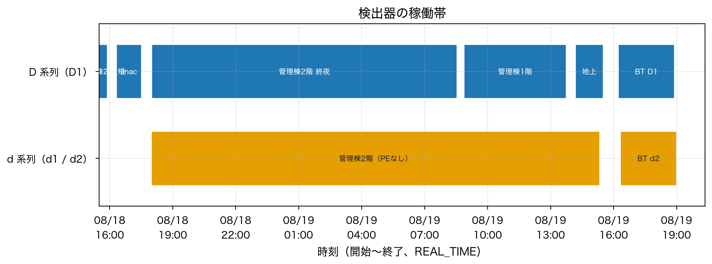

日付_時刻_場所_検出器.mca 例: 20260819_0832_管理棟2階_D1.mca
D1 と d1 は別の検出器。大文字小文字を変えないchannel,counts上段 D1（SN 1715）、下段 d1 / d2（SN 2162）。帯の長さは開始〜終了。

| 旧名 | 現ファイル | 備考 |
|---|---|---|
| 20260818_1552_管理棟2F | 20260818_1552_管理棟2階_D1 | |
| 20260818_1730_linac | 20260818_1730_linac_D1 | |
| 管理棟2階_0819 | 20260819_0832_管理棟2階_D1 | D1 終夜 |
| 管理棟1階_0819 | 20260819_1344_管理棟1階_D1 | |
| 0819放射線棟2階d1 | 20260819_1520_管理棟2階_d1 | 場所の誤記。管理棟2階・d1。ポリエチレンの緩衝材なし |
| D1＿地上_0819 | 20260819_1530_地上_D1 | |
| D1_20260819_BT | 20260819_1854_放射線棟BT_D1 | |
| 0819放射線BTd2 | 20260819_1859_放射線棟BT_d2 | d2。管理棟の D1 ではない |